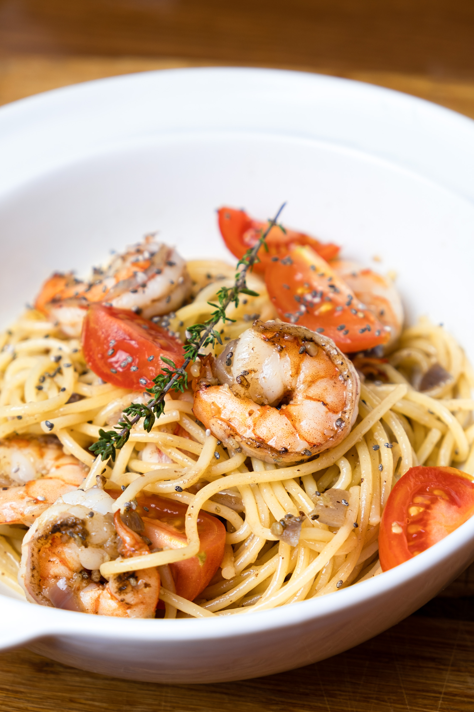

Home
Garlic Butter Shrimp Pasta

Description:
Garlic Butter Shrimp Pasta is a quick and flavorful dish that combines tender shrimp with a rich, garlicky butter sauce tossed in al dente pasta. The shrimp are sautéed until perfectly pink and juicy, enhanced with a splash of lemon juice and a hint of spice from red pepper flakes. This dish is perfect for busy weeknights when you want something satisfying yet elegant, and it can be made in under 20 minutes.
Time: 20 minuets
Ingredients:
- 8 oz Pasta
- 1 lb shrimp
- 4 tbsp butter
- 4 cloves garlic, minced
- juice of 1 lemon
- 1/4 tsp red pepper flakes (optional)
- salt adn pepper
- Parsley (for garnish)
Instructions:
- Cook pasta according to package directions.
- In a skillet, melt butter over medium heat. Add garlic and red pepper flakes.
- Add shrimp, season with salt and pepper. Cook 2-3 minutes per side until pink
- drain pasta, toss it with shrimp, lemon juice, and Parsley. Serve warm.